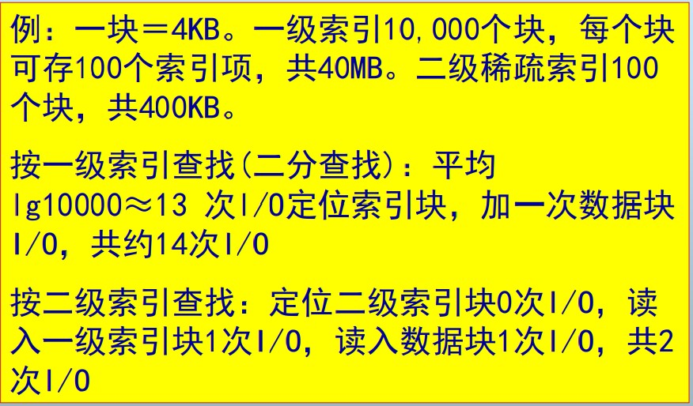
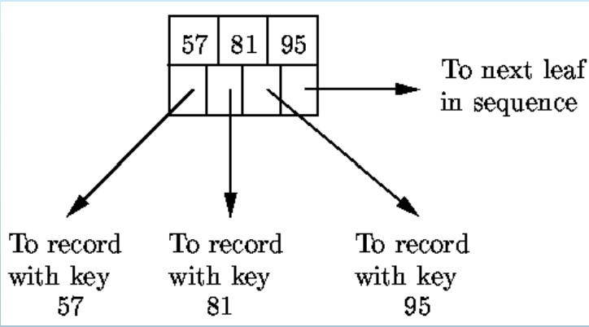
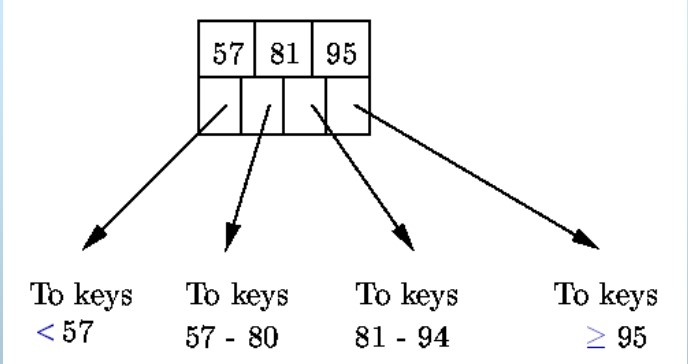
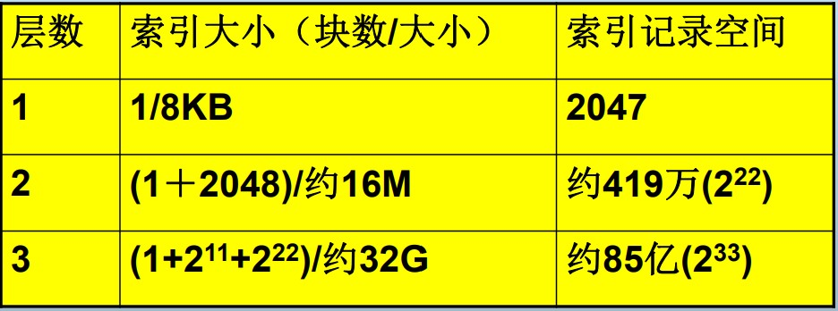

缓冲区管理；索引结构
缓冲区管理
- 缓冲区由一个个frame构成，每个frame刚好可以容纳一个页
- 缓冲区介于内存和磁盘之间，为计算机程序隐藏了“并非所有数据都存在内存”这一事实
Frame的参数
- Dirty
Frame中的块是否已经被修改
- Pin-count
Frame的块的已经被请求且还未释放的计数，即当前的用户数
- *Others
Latch: 是否加锁
缓冲区管理过程
- 当请求块且块不在缓冲区时：
- 选择一个用于替换的frame（空或非空）
- 如果frame是dirty的，frame的内容写回磁盘
- 将请求块写入被选择的frame
- 将该frame的pin-count自增1，且返回其地址
- 当释放块时
- 请求者将该frame的pin-count自减1
- 请求者必须声明该块是否被修改过（用frame->dirty）
缓冲区替换策略
- 理论最优：OPT算法（也称为Belady’s算法）
- 常用：LRU, LRU-K, 2Q, Second-Chance FIFO, CLOCK
LRU
- 基于时间局部性: 越是最近访问的，在未来被访问的概率越高
- 优点：
- 适用于满足时间局部性的场景（多次重复请求同一页）
- 选取frame的时间复杂度是O(1)
- 缺点：
- 缓存污染：LRU + repreated sequential scans
- 维护LRU链表代价昂贵：修改链表耗时
- 如果访问不满足时间局部性，则性能较差
- 只考虑最近一次访问，不考虑访问频率
LRU-K
- 如果某个frame的访问次数达到了K次以上，则应当尽量不置换
- 实验表明，K并非越大越好，LRU-2性能较好
- 缺点：需要额外记录访问次数
Second-Chance FIFO
- 所有frame组成FIFO链表，每个frame附加一个bit位，初始为0.当FO页第一次被选中置换为1，并移动到FI端。只有bit为1的FO页才被选中替换
- 优点：每个frame只需要1个额外bit，空间代价很低
- 缺点：置换时需要移动多个元素，理论性能比LRU差。
Q: 为什么不适用OS缓冲区管理，而需要DBMS？
A: DBMS经常能预测访问模式。可以使用更专门的缓冲区替换策略，有利于pre-fetch策略的有效使用。且DBMS需要强制写回磁盘能力，OS的缓冲写回一般通过记录写请求来实现（来自不同应用），实际的磁盘修改推迟，因此不能保证写顺序
索引结构
- 重要内容；B+树、散列表的概念；不同索引方式的优缺点对比，如时空复杂度、功能差异；多维索引的概念
- 密集索引
- 每个记录都有一个索引项
- 索引项按查找键排序
- 使用密集索引的原因：记录通常比索引项要大；索引可以常驻内存；要查找键值为K的记录是否存在，不需要访问磁盘数据块
- 缺点：索引占用太多空间 -> 用稀疏索引改进
- 稀疏索引
- 仅部分记录有索引项
- 一般情况：为每个数据块的第一个记录建立索引项
- 优点：节省了索引空间；对同样的记录，稀疏索引可以使用更少的索引项
- 缺点：对于“是否存在键值为K的记录？”，需要访问磁盘数据块
- 多级索引
- 好处：一级索引（直接指向记录）可能还太大而不能常驻内存；二级索引更小，可以常驻内存；减少磁盘IO次数
- 磁盘IO次数计算：读索引n次IO+读入数据块1次IO. 例子：

- 适用场景：当一级索引过大而二级索引可常驻内存时有效
- 缺点：二级索引进仅可用稀疏索引；一般不考虑三级以上索引（B+树更好）
- 辅助索引、倒排索引（自行查找概念）
B+树
- 一种树形多级索引结构
- 树的层数与数据大小相关，通常为3层
- 所有节点格式相同：n个值，n+1个指针
- 所有叶子节点位于同一层
- 叶子节点：
- 个指向相邻叶节点的指针
- n对指针-键值对
- 至少
个指针指向键值

- 中间节点：
- n个键值划分n+1个子树
- 第i个键值时第i+1个子树中的最小键值
- 至少
个指针指向子树 - 根节点至少2个指针

B+树的增删改查：自查资料
B+树的特点
- 结构稳定
- 支持范围查询（键的组织基于比较）
- b+树更新索引代价高；额外空间代价高（因为是多维索引）
- 访问索引的IO代价=树高（B+树不常驻内存）或者0（常驻内存）
- 树高通常不超过3层，因此索引IO代价不超过3（总代价不超过4）. 通常情况下，根节点常驻内存，因此索引IO代价不超过2（总代价不超过3）
- 例子：设块大小8KB，键2 Bytes，指针2 Bytes，则一个块可以放2048个索引项.

散列表
- 散列函数
- h: 查找键（散列键）-> [0,…,B-1]
- 桶：序号为0,1,…,B-1
- 散列索引流程
- 若一个桶中仅一块，则IO次数=1
- 否则由参数B决定，平均IO次数=总块数/B
可扩展散列表
- 定义自查. 这里只总结优缺点
- 优点：大部分情况下不存在溢出块，因此当查找溢出块时，只需要查找一个存储块
- 缺点：桶增长速度快，可能导致内存放不下整个桶数组，影响其他保存在主存中的数据，波动较大
线性散列表
- 定义自查. 这里只总结优缺点
- 优点：空间效率优于可扩展散列表；综合性能较好
- 缺点：查找性能比可扩展散列表差
B+树与散列表对比
| 特征\索引结构 | B+树 | 散列表 |
|---|---|---|
| 结构稳定性 | 稳定 | 不稳定 |
| 范围查询 | 支持（基于序关系） | 不支持 |
| 查找IO代价 | 有n层节点在磁盘中则代价为n+1 | 平均IO次数=总块数/桶数 |
| 额外空间代价 | 高（多级索引） | 低 |
| 更新索引（增、删）代价 | 高（多级索引且涉及节点的分裂合并） | 低 |
多维索引
- 空间数据
- Point
- Line
- Polygon
- 用于决策分析的多维数据
- 数据——关系
- 维——关系的每个属性
- 多维查询
- 同时在数据的多个维度上进行匹配
- 传统的索引只能索引一维，不适于多维数据处理
- 经典例子：R-Tree